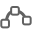

<link rel="import" href="../../bower_components/polymer/polymer.html">

<link rel="import" href="web-status-styles.html">

<dom-module id="yb-web-status">

  <style include="web-status-styles"></style>

  <template>
    
    
    <div class="status-count" id="linksCount"></div>
  </template>

  <script>
    (function() {
      'use strict';
      
      Polymer({
        is: 'yb-web-status',
        ready: function() {
          this.linksCount = this.$.linksCount;
        },
        attached: function() {
          var parentWebElement = this.getParentWebElement();
          if (parentWebElement) {
            parentWebElement.onInit(function(web) {
              linksCount.textContent = web.getLinks().length;
              web.onLinks(function() {
                linksCount.textContent = web.getLinks().length;
              });
            });
          }
        },
        getParentWebElement: function() {
          var parent = this.parentNode;
          while (parent) {
            if (parent.isYbWeb) {
              return parent;
            }
            parent = parent.parentNode;
          }
          return null;
        },
      });
    })();
  </script>

</dom-module>